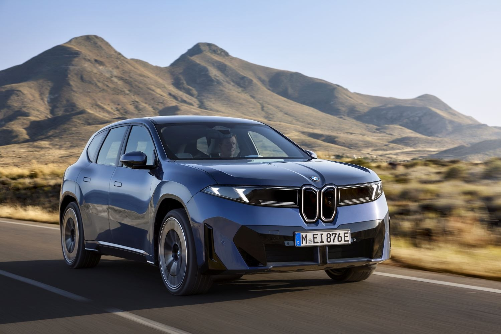
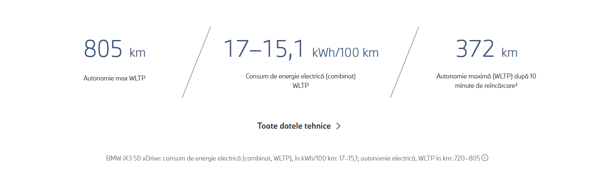

Exterior și interior generos proporționat al noului BMW iX3 evidențiază clar trăsăturile inconfundabile ale designului mărcii și, în combinație cu o experiență interioară modernă și orientarea tipică BMW către conducătorul auto, creează un confort optim. Cu o autonomie de până la 805km și o putere de încărcare de 400 kW, BMW iX3 50 xDrive stabilește noi standarde în segmentul SUV-urilor electrice. Inovatorul BMW Panoramic iDrive duce operarea intuitivă și orientarea către conducătorul auto la un nou nivel. Cu BMW Heart of Joy și sisteme optimizate de asistență pentru conducătorul auto, se atinge un nou nivel al plăcerii de a conduce.

BMW iX3 50 xDrive: consum de energie electrică (combinat, WLTP), în kWh/100 km: 17-15,1; autonomie electrică, WLTP în km: 720-805
